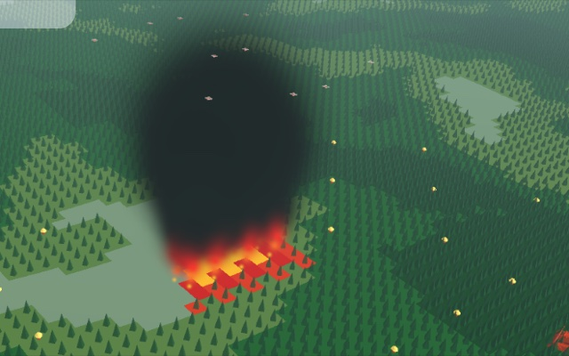
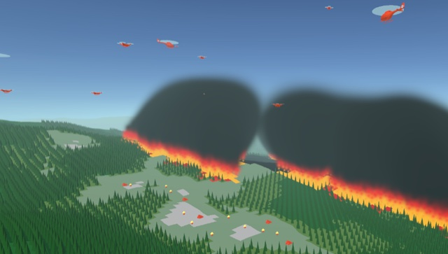

Biography
Jonathan P. Hyun is a senior at Duke University pursuing a B.S. in Computer Science and a B.S. in Mathematics with a concentration in AI/ML, graduating in May 2027. He is a researcher at the Duke General Robotics Lab, advised by Prof. Boyuan Chen, where his work focuses on human-in-the-loop reinforcement learning, multi-agent systems, and embodied AI.
He is first author of CREW-WILDFIRE (TMLR 2025), a benchmark for large-scale agentic multi-agent collaboration, and co-author of ORCH, which extends the CREW-WILDFIRE testbed to study how organizational structure enables collective intelligence in embodied AI. Outside the lab he has worked as a Software Engineering / AI/ML Engineering Intern at MIT Lincoln Laboratory and co-founded Pulse LLC, a video-feedback platform used by Duke's School of Medicine. He is a U.S. citizen and holds a full U.S. government security clearance.
News
- Released the ORCH preprint on arXiv.
- Started as a Software Engineering / AI/ML Intern at MIT Lincoln Laboratory.
- CREW-WILDFIRE accepted to TMLR.
- Presented DOJO / CREW-WILDFIRE research to Columbia's LIINC Lab, GWU's Mitroff Lab, ARL DEVCOM, and MIT Lincoln Laboratory.
- Co-founded Pulse LLC.
- Began research at the Duke General Robotics Lab.
Publications
Google Scholar-

arXiv preprint · September 2026
Applies human organizational theory to embodied AI agents, combining concurrent work with sequential, prerequisite-based coordination. Across 25 wildfire-response scenarios with up to 50 heterogeneous agents and 8 LLMs, human-designed organizations improve performance by ~64% and efficiency by ~74% over baselines; automatically generated organizations reach ~44% and ~53%. Results hold across missions and model sizes.
-

Transactions on Machine Learning Research · 2025
An end-to-end framework for hosting scalable, large-scale agentic teams in complex environments. Distributed server/client Docker containers with gRPC support 2,000+ AI agents; benchmarks 5 state-of-the-art multi-LLM agentic algorithms.
Projects
-
DOJO Framework
CodeC++/PyTorch/CUDA framework accelerating human-in-the-loop reinforcement learning across 50+ unique robots with 10 algorithms (PPO, DQN, DDPG, SAC, GUIDE, COACH). Built at the Duke General Robotics Lab.
-
WILD-Teaming
Distributed multiplayer human-AI teaming interface on Dockerized microservices (AWS EC2) with real-time WebSocket communication; a modular multimodal LLM/VLM agentic architecture cuts inference time by log(N) across heterogeneous teams.
-
DARPA Robotics Challenge 2025: Open-Vocabulary Semantic Navigation
Semantic navigation on a Boston Dynamics Spot quadruped, integrating DINOv2 open-vocabulary VLMs with ROS for zero-shot environment understanding; sim-to-real transfer validated across Habitat Sim, MuJoCo, and real-world deployment.
-
TIAMAT SceneGraph
DARPA paperOpen-vocabulary 3D scene graphs for language-guided quadruped navigation under DARPA's TIAMAT program (Abstract Planning and Semantic Understanding challenge). Builds region and object graphs from accumulated depth point clouds and VLM detections so the robot can ground natural-language tasks in unseen indoor and outdoor environments; developed alongside the navigation system above and run in Habitat, MuJoCo, Isaac Sim, and on hardware.
-
MiniAmazon
Full-stack marketplace with a CI/CD pipeline, 20+ Flask APIs, and a normalized 10+ table database handling authentication, transactions, and inventory for 1000+ products.
-
CampusETA
HackDuke project: an accessible mobile app providing on-demand public transit ETAs.
-
Pulse
Video-feedback platform for Duke's School of Medicine, used by 500+ MD students; a RAG framework on ChromaDB generates LLM-tailored feedback.
Experience
Full details in CV- MIT Lincoln Laboratory · Lexington, MASoftware Engineering Intern, AI/ML Engineering InternApr 2026 – present
- Duke General Robotics Laboratory · Durham, NCAI Researcher, First Author, Undergraduate MentorFeb 2024 – present
- Pulse LLC · Durham, NCCo-founder, Full Stack DeveloperMay 2024 – Jan 2026
- Talk Hiring · RemoteSoftware Engineering Intern, Front-End DeveloperJan – Aug 2023
Mentorship & Service
Undergraduate Mentor, Duke General Robotics Lab (2024 – present).
Lab
Member of the General Robotics Lab at Duke University, advised by Prof. Boyuan Chen.